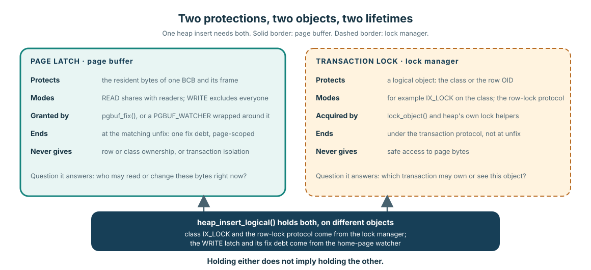
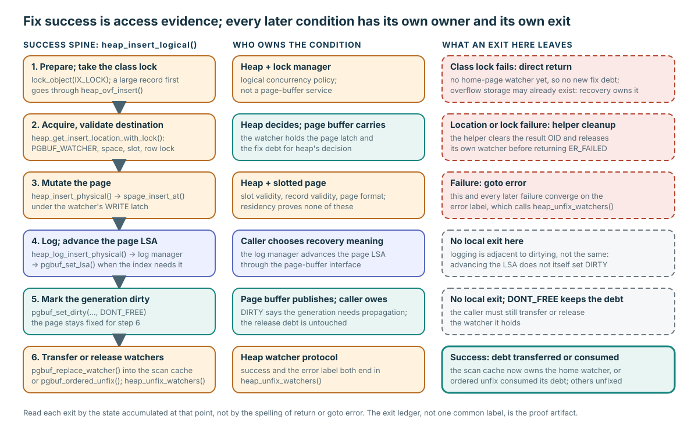

성공한 fix는 access 질문에만 답합니다
NULL이 아닌 PAGE_PTR는 요청한 resident page에 임시로 latched access를 얻었다는 증거일 뿐, caller의 logical operation이 올바르다는 증거는 아닙니다.
Fix 성공만으로 heap slot이 적합한지, record representation이 유효한지, transaction이 필요한 logical lock을 보유했는지, recovery payload가 올바른지, page LSA가 전진했는지, generation이 dirty인지, 모든 error path가 watcher를 release하는지는 알 수 없습니다.
Page latch와 transaction lock은 서로의 더 강한 버전이 아닙니다

heap insert 하나에는 둘 다 필요하지만, 보호하는 객체와 release protocol이 다릅니다.
| Protection | 보호 대상 | 끝나는 시점 | 제공하지 않는 것 |
|---|---|---|---|
| Page latch | BCB/frame 하나의 resident bytes | matching unfix 또는 watcher transfer/release 시점 | Row/class ownership 또는 transaction isolation |
| Transaction lock | Logical class 또는 row identity | transaction protocol이 정한 시점 | resident page bytes에 대한 안전한 access |
Interface contract: page latch는 현재 in-memory bytes access를 보호합니다. Implementation policy: 이 heap insert는 page-buffer watcher ownership과 lock manager의 class/row locking을 함께 사용합니다.
성공 path의 여섯 step을 따라갑니다

각 row를 왼쪽부터 action, owner, exit에 남는 state 순서로 읽으세요.
- Prepare and lock: heap과 lock management가 logical concurrency를 성립시킵니다. 큰 record라면 먼저 overflow storage를 만들 수도 있습니다.
- Acquire and validate: watcher가 page latch와 fix debt를 보유하는 동안 heap은 space, slot, identity, row-lock condition을 검증합니다.
- Mutate: heap 및 slotted-page code가 record와 page-format invariant를 지킵니다.
- Log and advance LSA: caller가 recovery 의미를 선택합니다. 필요하면 log manager가 page-buffer interface를 통해 page LSA를 전진시킵니다.
- Publish DIRTY:
pgbuf_set_dirty(..., DONT_FREE)는 ownership을 의도적으로 유지하면서 resident generation을 propagation 대상으로 표시합니다. - Transfer or release: caller가 home watcher를 scan cache로 transfer하거나 ordered-unfix한 뒤 남은 watcher를 cleanup합니다.
Verified mechanism과 Implementation policy: 대표적인 success spine은 pinned heap_file.c:23120–23324에 있습니다. 이는 대표 caller의 evidence이지, 모든 page-buffer caller가 올바르다는 증명은 아닙니다.
mutation, recovery evidence, dirtying, release는 서로 다른 네 event입니다
| Event | 새로 성립하는 것 | 아직 성립하지 않는 것 |
|---|---|---|
| Physical mutation | WRITE latch 아래의 resident bytes에 새 heap record가 들어갑니다. | recovery 의미나 propagation obligation이 자동으로 따라오지는 않습니다. |
| Log append + page LSA | caller의 recovery action이 기록되고, recovery index가 요구하면 page LSA가 전진합니다. | LSA가 바뀌었다고 page가 자동으로 dirty가 되지는 않습니다. |
pgbuf_set_dirty(..., DONT_FREE) | 현재 resident generation에 page-image propagation이 필요해집니다. | watcher debt는 남습니다. 이 호출만으로 page가 flush되거나 모든 boundary에서 durable해지지는 않습니다. |
| Transfer or unfix | caller가 ownership debt를 옮기거나 갚습니다. | Release는 commit, flush, eviction이 아닙니다. |
WRITE latch → mutate → recovery log/page LSA → DIRTY → transfer or release.
모든 exit에서 ownership cleanup을 증명합니다
| Exit seam | Home watcher? | 그 밖의 obligation | Cleanup owner |
|---|---|---|---|
| Class-lock direct return | 아직 acquire하지 않음 | 큰 record를 위한 overflow storage가 이미 존재할 수 있습니다. | 바깥 transaction/recovery가 연결된 system-operation state를 소유합니다. |
| Destination-selection failure | helper가 하나를 선택했을 수 있음 | Result OID와 helper-local selection state. | heap_get_insert_location_with_lock()가 자신의 failure를 cleanup합니다. |
| Physical insert 또는 이후 failure | hold 중일 수 있음 | 다른 context watcher도 hold 중일 수 있습니다. | failure는 error:와 heap_unfix_watchers()로 모입니다. |
| Success | 마지막 ownership 결정까지 hold | Scan cache가 transfer를 받을 수 있습니다. | pgbuf_replace_watcher()가 transfer하거나 ordered unfix가 소비하고, 남은 watcher는 cleanup됩니다. |
class-lock ordering은 source에서 보이는 ownership boundary이지 production leak의 evidence가 아닙니다. 마찬가지로 공통 error: label 하나가 있다는 사실만으로 앞선 direct return이나 helper-owned cleanup에 관해서는 아무것도 증명할 수 없습니다.
NEW_PAGE materialization은 allocation 다음입니다
PAGE_FETCH_MODE::NEW_PAGE는 caller가 allocated page identity를 이미 소유하고 있고, 기존 bytes를 읽지 않은 채 resident frame을 초기화하려 한다는 뜻입니다. logical page를 allocate하는 mode가 아닙니다.
allocation state, 초기 page type/layout, TDE state, recovery semantics, dirtying, 최종 ownership은 file management가 담당합니다. page-buffer Module은 frame을 materialize하고 보호합니다.
Representative source: pinned file_alloc()가 allocation을 수행한 뒤 pgbuf_fix(..., NEW_PAGE, WRITE, ...)를 호출하는 흐름은 file_manager.c:5420–5590에서 확인할 수 있습니다.
mutation의 전체 contract를 audit합니다
문제
“WRITE fix가 성공한 뒤에도 logged mutation이 올바르려면 heap caller가 무엇을 더 증명하고 수행해야 하며, 모든 exit를 어떻게 audit해야 하나요?”
권장 답변 구조: 두 protection → validate → mutate → log/page LSA → DIRTY → transfer/release → exit ledger.
할 일: pgbuf_set_dirty()가 page-LSA advancement도 release도 아닌 이유를 설명하고 early exit 하나를 분석하세요.
답을 chat에 붙여 넣으세요. mastery를 기록하기 전에 layer ownership, ordering, exit cleanup, evidence strength를 확인합니다.
caller의 전체 mutation protocol을 annotate합니다
Pinned heap_file.c:23120–23324를 읽으세요. 여섯 success step과 모든 direct return 또는 goto error를 표시합니다. 각 exit마다 acquired state, cleanup/transfer owner, 남은 recovery 또는 retry 결과를 기록하세요.